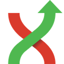
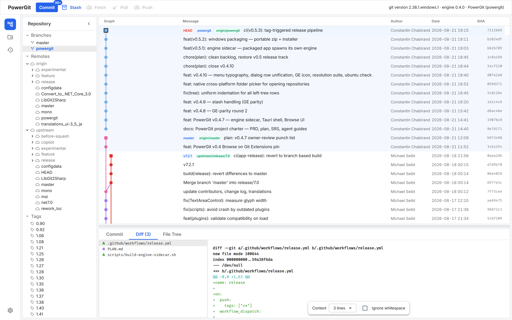
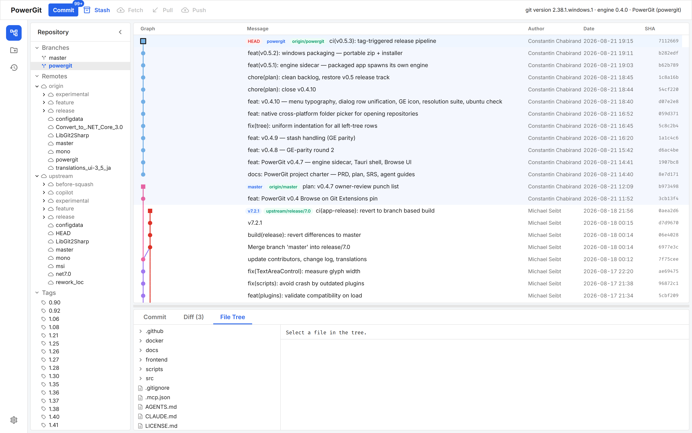
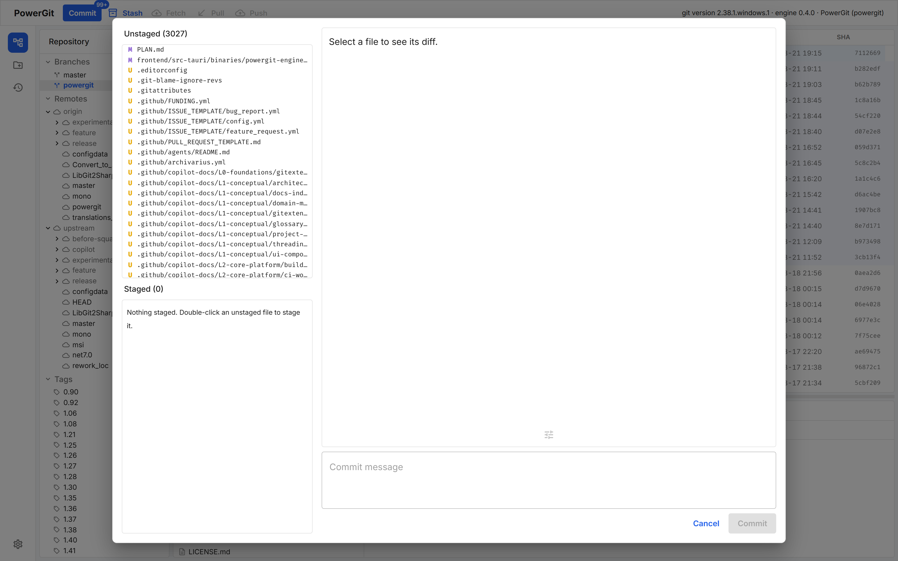

The graph is the product. Everything below is live against your real repositories today.
All branches and tags always visible — no filters needed. Git Extensions lane colors, virtualized to thousands of commits, stashes shown as nodes.
Per-commit file list and full repo file tree at any revision — open unchanged files too. Unified diffs with the GE palette and context/full-file/whitespace options.
FormCommit-style window: unstaged | staged | diff | message, multi-select with shift/ctrl, right-click stage/delete/gitignore with ignore preview.
Right-click the graph: checkout, reset (soft/mixed/hard), rebase — same guards as Git Extensions. Right-click the tree: branches, tags, remotes (fetch/configure), submodules.
Stash, apply, pop and drop from a topbar mini-menu or the manage dialog; stashes appear as nodes in the graph.
The UI never touches git directly — a self-contained .NET 10 engine sidecar does all git I/O and is spawned automatically by the app.
Captured from real builds.



Windows dev machine, .NET 10 SDK, Node 22, Rust.
# engine tests dotnet test src/engine/PowerGit.Engine.sln # UI dev server cd frontend && npm ci && npm run dev:all # packaged app (spawns its own engine) pwsh scripts/package-windows.ps1 # headless proof npm run test:e2e npm run test:resolution